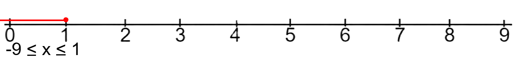

Intervals (Math)
Introduction
Intervals in mathematics are sets that contain numbers that are in between two numbers called endpoints. An example of an interval would be numbers between 1 to 10...
1 to 10 = {2, 3, 4, 5, 6, 7, 8, 9}
Notation for intervals can depend on the type of interval it is. Like how (Open Intervals are enclosed in Parentheses). Intervals can also have endpoints that are infinite
Type of Intervals
There are a few type of intervals that can either include or exclude the starting numbers.
Open Intervals
Open Intervals don't contain the endpoint numbers so from the previous example, 1 and 10 aren't included...
4 to 7 = 5, 6
Open intervals are noted with (parantheses around them)...
(-9, 1) = -8, -7, -6, -5, -4, -3, -2, -1, 0
Closed Intervals
Closed Interval do contain the endpoint numbers, they are instead noted with [sqaure brackets]...
[-9, 1] = -9, -8, -7, -6, -5, -4, -3, -2, -1, 0, 1

Half closed, half open / Half open, half closed
Sometimes an Interval can be half closed half open or the other way around like these...
[1, 3)
(4, 11]
[6, 9)
This basically means that one endpoint won't be included and the other will...
[3, 9) = 3, 4, 5, 6, 7, 8